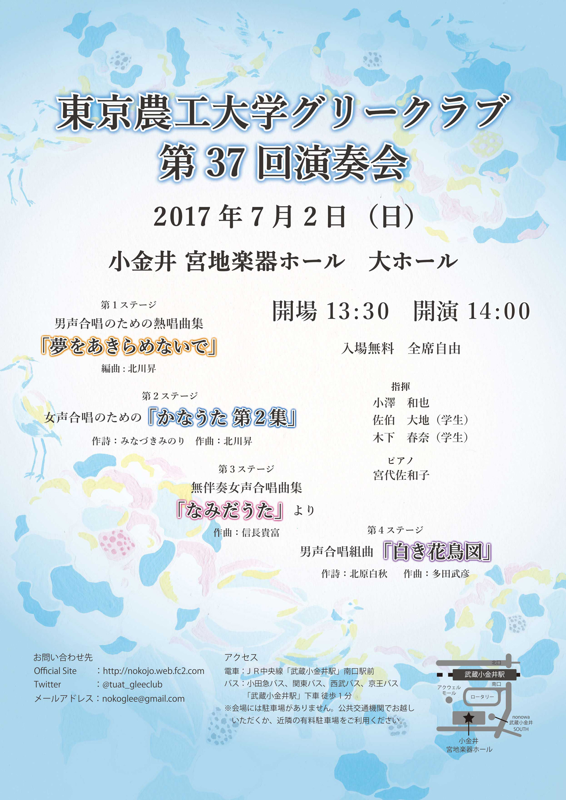

東京農工大学クリークラブ 第37回演奏会
日時：2017年07月02日(日)
会場：小金井宮地楽器ホール 大ホール
開場：13:30 開演：14:00
入場無料・全席自由
男声合唱のための熱唱曲集「夢をあきらめないで」
編曲:北川昇女声合唱のための 「かなうた 第２集」
作曲：北川昇 作詩：みなづきみのり無伴奏女声合唱曲集「なみだうた」より
作曲：信長貴富男声合唱組曲「白き花鳥図」
作詩：北原白秋 作曲：多田武彦指揮 小澤和也
伴奏 宮代佐和子
学生指揮者 佐伯大地(1st Stage)/木下春奈(3rd Stage)
JR中央線「武蔵小金井駅」南口 駅前
小田急バス、関東バス、西武バス、京王バス「武蔵小金井駅」下車 徒歩1分
※会場には駐車場がありません。公共交通機関でお越しいただくか、近隣の有料駐車場をご利用ください
会場所在地：
〒184-0004
東京都小金井市元町6-14-45
お問い合わせはこちら